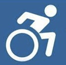
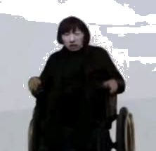

Memes

Playground
Music
⚙️
Sans-serif
Serif
Light Mode
Dark Mode
High Contrast
This is the Meme Vault for the GOAT LOL player OTTO
Explore the most popular memes created by OTTO's fans.
Watch Original Video